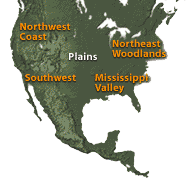

|
|
 |
Pottery has been excavated from some of the earthen mounds. This clay
jar was unearthed in present-day Arkansas. It was hand-made using the
coiling technique. The coils of clay were wound around to build up the
sides of the jar and then pinched together and smoothed. The design was
made by scratching lines into the wet clay after the pot was formed, then
the pot was fired to harden the clay. |
|
 |
||